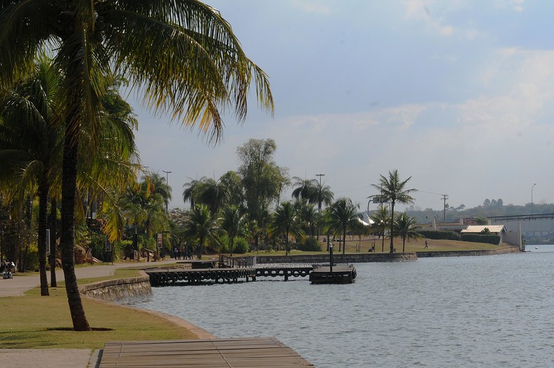

Matias, é uma pessoa curiosa, ele decidiu procurar um local para se divertir em uma floresta perto de sua casa. Ele anda por um caminho tranquilo, admirando a natureza ao seu redor. Depois de um tempo andando, ele chega a uma divisão no caminho. Para qual direção João vai seguir?
Matias decide seguir pela direita, o caminho iluminado pelo sol. Ele continua andando e, após alguns minutos, ele encontra seus colegas de escola.